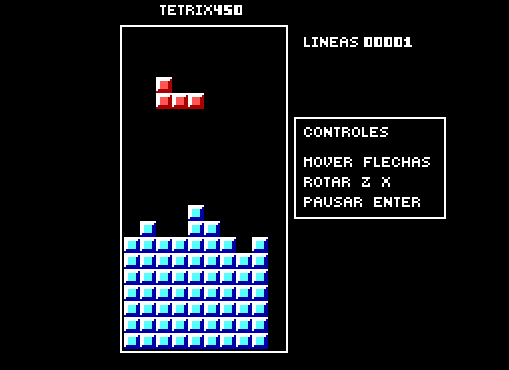

Projects
Among all my projects, MASIC is my greatest achievement. It was my Bachelor's Thesis, graded 10/10: after four years of development, a complete computer architecture was designed and built from scratch, featuring an original ISA, microprogrammed control and functional hardware implemented with a low level of integration.
MASIC
CPU

Original 8-bit accumulator-based CPU with a custom ISA and microprogrammed control: the most important part of the MASIC project, the construction of a computer from scratch.
View detailsMASIC
Emulator

MASIC system emulator: debugs CPU behaviour and program execution. It enabled architectural validation without physical hardware and became an important part of software development for this computer.
View detailsMASIC
Video Adapter

VGA video adapter compatible with MASIC that autonomously generates the synchronization and colour signals required for video output.
View detailsMASIC
Assembler

Custom assembler featuring labels, expressions and nested macros to make the machine easier to program.
View detailsASMtris

x86 assembly implementation of the video game Tetris.
View on GitHub